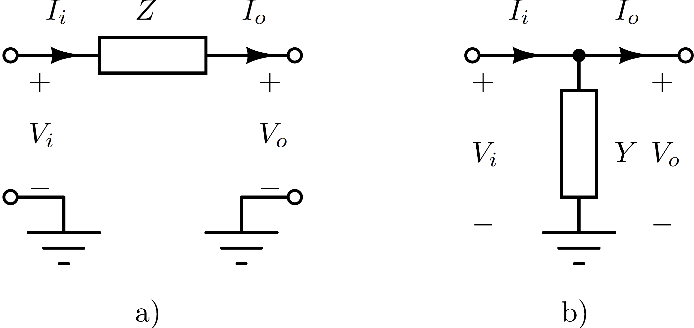
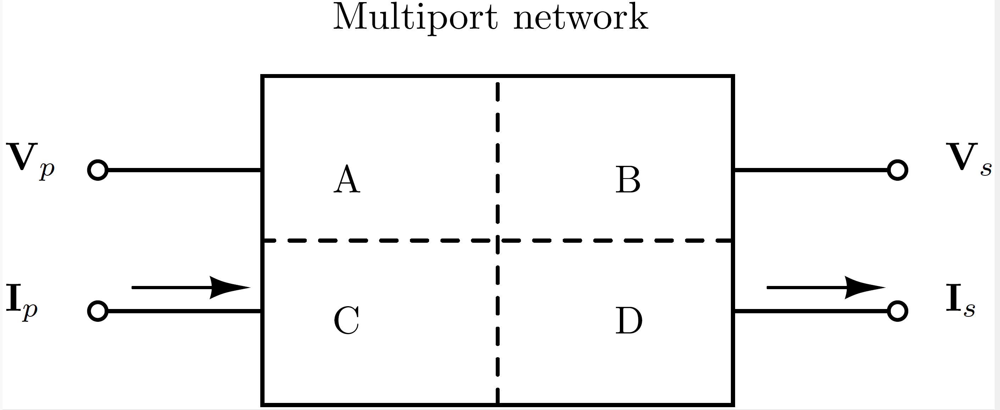
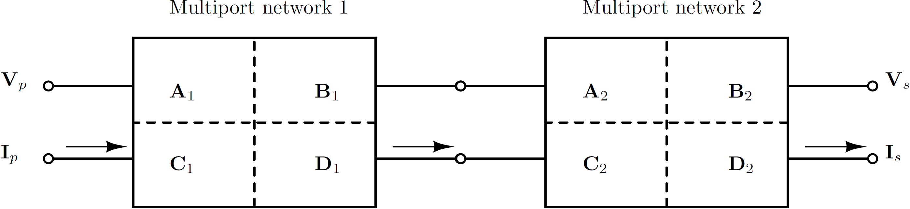
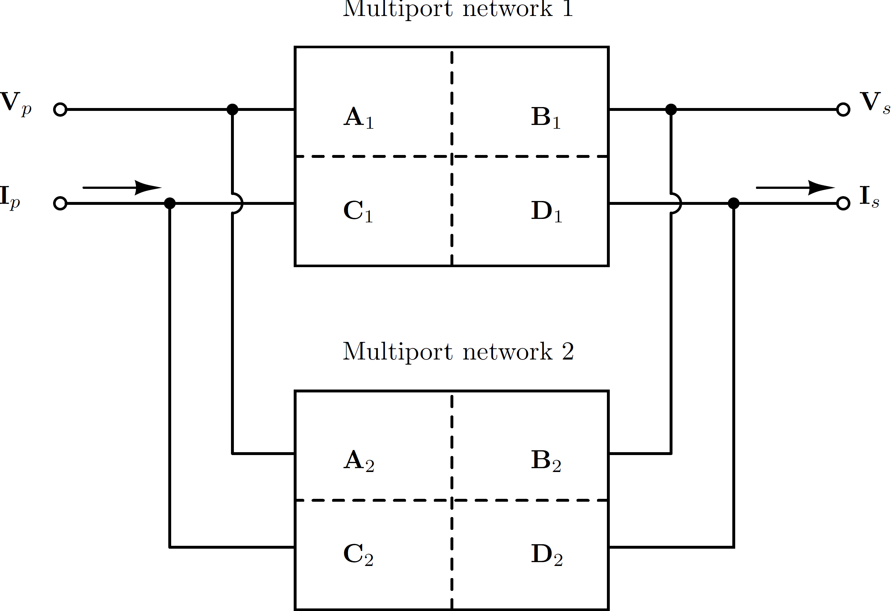

Introduction
Power-electronic converters interact with passive networks and with other controlled devices over a broad frequency range. These interactions are often described as harmonic or electromagnetic stability phenomena. Frequency-domain small-signal models make those interactions visible without requiring a full electromagnetic-transient simulation for every operating condition [1, 2].
PowerImpedance builds linearized multiport models around an AC/DC power-flow operating point. Detailed passive models retain their frequency-dependent behavior, while active components include the relevant electrical dynamics and controls. The assembled response can then be used for impedance-based or nodal-admittance-based stability assessment [3, 4].
Why multiport ABCD parameters?
Some elementary interconnections do not admit a finite impedance or admittance description. An ideal series branch has no finite open-circuit impedance matrix, while an ideal shunt connection has no finite short-circuit admittance matrix.

ABCD parameters instead relate the input-port variables directly to the output-port variables. For an $n$-port system,
\[\begin{bmatrix} \mathbf{V}_p \\ \mathbf{I}_p \end{bmatrix} = \begin{bmatrix} \mathbf{A} & \mathbf{B} \\ \mathbf{C} & \mathbf{D} \end{bmatrix} \begin{bmatrix} \mathbf{V}_s \\ \mathbf{I}_s \end{bmatrix},\]
where each block is $n\times n$. A port may represent a single conductor, a polyphase AC terminal, a multipole DC terminal, or the boundary of a larger subnetwork.

Interconnecting multiports
Series-connected components compose by multiplying their ABCD matrices in physical order:
\[\mathbf{T}_{\mathrm{series}} = \mathbf{T}_1\mathbf{T}_2, \qquad \mathbf{T}_k = \begin{bmatrix} \mathbf{A}_k & \mathbf{B}_k \\ \mathbf{C}_k & \mathbf{D}_k \end{bmatrix}.\]

Parallel composition is formed by imposing common terminal voltages and summing terminal currents. The implementation handles the corresponding block matrix operations, including cases in which a direct $\mathbf{B}^{-1}$ formula is unavailable.

ABCD representations are converted to nodal admittance form where required. For invertible $\mathbf{B}$, the conversion is
\[\mathbf{Y} = \begin{bmatrix} \mathbf{D}\mathbf{B}^{-1} & \mathbf{C}-\mathbf{D}\mathbf{B}^{-1}\mathbf{A} \\ -\mathbf{B}^{-1} & \mathbf{B}^{-1}\mathbf{A} \end{bmatrix}.\]
Nodal impedances can then be recovered from the assembled admittance matrix, with Kron reduction used to eliminate internal nodes when needed [5, 6].
Analysis workflow
The complete workflow is:
- construct and connect the physical components;
- solve the AC/DC power flow when nonlinear operating points are required;
- linearize active devices and assemble frequency-dependent passive models;
- construct the desired impedance, nodal admittance, edge admittance, or loop gain; and
- apply the relevant stability or sensitivity analysis.
The scalar workflow and Gridspace workflow use the same component and solver kernels. A deterministic or uncertain study evaluates repeated numeric cases and aggregates their results without changing the physical definition of the system.